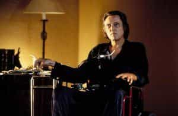
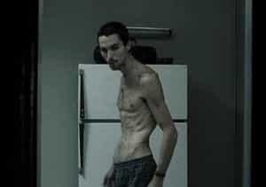
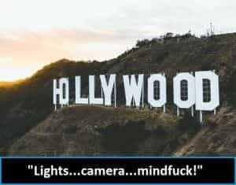

Bob Smith is a man in search of the truth. His favorite quotes are, "We're all fools on this earth, and I can be no different"; "I know it's true, I read it at the LIE-brary"; and "The truth is not misogynistic, it's just the truth".


The following are personal reviews of some of my favorites films, covering the period of Hollywood cinema from 1992-2004, and there isn’t a loser in the bunch—not a single SJW-themed film can be found, and the overall entertainment and educational value is uncommonly solid.
In no particular order, here they are (check ’em out if you have some free time on your hands; you won’t be disappointed):

Nobody writes dialogue like David Mamet. And nobody plays a ball-busting alpha male like Alec Baldwin; check out his monologue at the beginning of the film, and prepare to be knocked down a couple of pegs—no matter how macho you might think you are (“Always be closing. ALWAYS be CLOSING…this WATCH is worth more than your CAR”).
Pacino is undeniably fabulous as super salesman Ricky Roma, who lies his way to staggering real estate commissions, while preying on various Beta males’ emotions, hopes and dreams. Great cast, superb dialogue, intriguing plot, and a surprise ending.

Arch-criminal Keyser Soze rules the world—but which one of the myriad human chess pieces that he’s currently moving around the board, is actually his alter ego? Kevin Spacey steals the show as Verbal Kint, a cheap, mouthy, crippled grifter who gets completely under the skin—and all the way inside the head—of clueless Detective Dave Kujan (played by Chazz Palminteri).
Benicio Del Toro is hilarious in the role of Fenster, a mumble-mouthed, babbling, oft-confused thief, and the talented Del Toro skillfully tosses away his lines like used snot rags. Great script, great dialogue, great scenes, an incredible cast, and a bang-bang, totally unforeseen ending that is guaranteed to stun. (This is truly a real man’s movie, and that’s for freakin’ sure. No blue-pillers allowed.)

A story of corrupt cops in Los Angeles (is there any other kind?). The Three Wise Men rule the city, and everybody else just goes along for the ride—including rookie cop Jake Hoyt (played by Ethan Hawke), who tries to buck the system as he clings to his blue-pill beliefs and schoolboy morals.
Denzel Washington is right on point as the charmingly sociopathic Detective Alonzo Harris; the bathtub scene, featuring some frighteningly likable Hispanic gangbangers, as they coldly and menacingly prepare to blow Hoyt’s ass away, is worth the price of admission. The delicious Eva Mendes is sperm-boiling hot in a partially nude scene, which rounds things out nicely—just like her perfect ass.

More L.A. police corruption at the behest of the super-rich players who pull everybody’s strings in the City of Angels. Kim Basinger plays Lynn Bracken, a cock-loving, carousel-widened, has-been Hollywood whore, to absolute perfection, as numerous horny dudes bang her out—all while being surreptitiously photographed by slimy scandal-sheet publisher Danny DeVito for purposes of blackmail.
Great acting chops displayed all the way around, most especially by veteran character actor James Cromwell, who plays a police captain who is (surprise!) on the take—and then some. Russell Crowe is violently convincing as the anger-prone, white knight cop, Bud White, who falls hopelessly in love with Kim Basinger’s hot-girl-who-hits-the-wall character, as he kicks ass, breaks skulls, and doles out street justice at every available turn. (“Hush, hush…”)

How would you handle it if your wife, who isn’t your typical cock-carousel-riding, SJW cum-dumpster, suddenly vanished while the two of you were driving cross-country through good-ol’-boy, yahoo-infested, inbred-dipshit territory? Russell does what he has to do in order to find his missing wife and bring her back alive, and he’s bottom-line great as the white-collar husband who finds himself forced to bring out his rabid, inner wild animal, in order to survive and save the woman he loves.
The now-deceased J.T. Walsh is understatedly menacing as the ringleader of the white-slavery ring that plucks Russell’s wife (played by Kathleen Quinlan) right out from under his city-slicker nose. Unnerving tension, great action sequences, and solid performances by all involved.

This unsettling film is flat-out creepy. Johnny Depp comes on strong as the outmanned, outgamed, rare-book dealer Dean Corso, but Frank Langella steals his thunder as the metaphysically inclined—and undoubtedly unhinged—Boris Balkan. Throw in an understated, haunting performance by smoking-hot Emmanuelle Seigner as the girl of Dean Corso’s recurring dreams (or is that nightmares), and a slutty, I-love-cock-but-I’ll-rip-your-heart-out performance by Lena Olin as the ruthless Liana Telfer, and you’re bound to be entertained right up to the extremely bizarre, highly inflammatory climax. No politically correct, SJW goings-on here: only greed, lust, betrayal and full-tilt horror.

Nothing cracks me up like the line, “Give it a name,” which basically pokes fun at scientists and other myriad “experts”, who give names to made-up bullshit, at the behest of rich oligarchs, who tell them exactly what to say in order to protect their nefarious scams. And this gold-plated one-liner recurs throughout this entertaining film, as we take a very bumpy ride with some colorful, lifelong Denver criminals, who agree to execute what they think will be one final job, which has been forcibly dumped on them by quadriplegic crime kingpin Christopher Walken.
Check out Treat Williams’ turn as Critical Bill, whose nickname stems from his unshakable habit of leaving nearly every single man with whom he bumps heads in critical condition. The seductive Gabrielle Anwar is hotter than Arizona in August, too, while maintaining a girl-next-door appeal that would make any Alpha male take a really hard second look.
This film was widely bashed by critics, mostly because it was an independent film whose writers openly and mockingly made fun of liberal insanity. Around 2005, virtually all Hollywood movies started reeking of SJW chicanery, and, depressingly, that trend has only accelerated since that time. But this is a truly funny, richly dark comedy about real-life relationships in the age of liberal excess, along with its concomitant collection of ridiculous, self-centered, personal expectations.
Check out the scene where Mohr’s character, finally free from his clingy fiancee, hooks up with two hotties for a three-way and one of them wants to do him in the ass with a strap-on (uh, no thanks). Features top-notch performances by Mohr, Nicholson and Cranston.

A psychologically pummeling look at the Jack the Ripper killings, from an entirely refreshing perspective—and with a heavily Masonic bent. Johnny Depp absolutely nails it as the opium-addicted Inspector Frederick Abberline, who has a curious talent for seeing the future, especially while chasing the dragon (a euphemism for smoking opium).
Abberline refuses to bow to his Masonic overlords, even when his investigation leads him right to their heavily guarded halls of power, and he pays a heavy price all the way through this vivid, nightmarish ride. Avowed SJW Heather Graham, despite her brainwashed, liberal leanings, looks wholesomely fuckable as prostitute Mary Kelly.)

Lead actor Christian Bale lost a frightening amount of weight in order to play the part of Trevor Reznik, a skeletal, insomniac machinist who hasn’t slept in over a year. Slowly losing his sanity, Reznik posts reminder notes on his refrigerator door in a desperate attempt to compensate for his growing inability to remember things. His madness accelerating, Reznik comes to believe that someone—probably one of his co-workers—is out to get him, using a phantom employee named Ivan (played by John Sharian) as the point man.
This movie is a thoroughly riveting, totally harrowing ride, and Christian Bale is at the absolute top of his game, making most of his future turns in countless mainstream Hollywood schlock-fests, look absolutely lame in comparison.
Personally, if I have to watch one more promotional clip on TV for a god-awful SJW-themed Disney movie, or a childish superhero movie, or a lousy bathroom-humor comedy, I’m gonna vomit. (But thankfully, I wouldn’t be caught dead watching any of those actual films—and hopefully, neither would you.)

Hollywood takes its name from the wood of the actual tree that was originally used to make magician’s wands, and smoke-and-mirrors deception and misdirection, is what it’s definitely all about. Its current mission is obviously centered around the outright force-feeding of blue-pill concepts to naive moviegoers everywhere, while completely dumbing them down in the process
But you can fight back.
Don’t watch today’s mainstream Hollywood crap whenever you can avoid it, and start doing that soon. Ice down a few cold ones, rustle up some snacks, call up your hottest girlfriend (women will like most of these films, even if they are liberals), tell her to get the heck over to your place, and then kick back and watch a few of these 10, killer, lights-out, red-pill-male films instead.
Read More: The Role Of Modern Entertainment In Beta Indoctrination